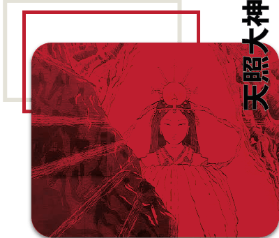
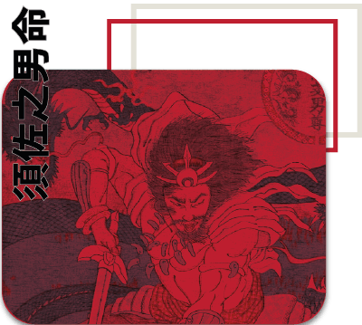
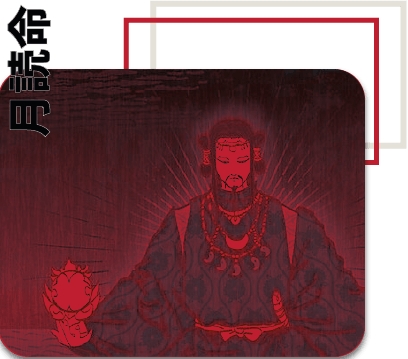
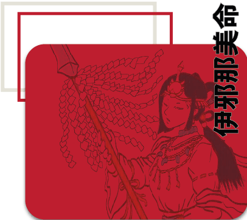

Amaterasu

Amaterasu es la diosa del sol y la figura central del panteón
sintoísta, considerada la deidad más importante de Japón.
Es hija de Izanagi y nació de su ojo izquierdo durante un ritual de
purificación. Se la reconoce como la ancestro divina de la
familia imperial japonesa, lo que le otorga un rol no solo
religioso sino también político y cultural.
Simboliza la luz, el orden, la armonía y la vida, siendo esencial
para el equilibrio del mundo. Su mito más famoso relata cómo,
tras una disputa con su hermano Susanoo, se escondió en la
cueva Ama-no-Iwato, provocando que el mundo quedara en
completa oscuridad.
Tsukuyomi

Tsukuyomi es el dios de la luna y hermano de Amaterasu y
Susanoo, también nacido de Izanagi durante su purificación. A
diferencia de su hermana solar, Tsukuyomi representa la noche,
el silencio y la introspección. Es una figura más misteriosa y
menos mencionada en los mitos, lo que refuerza su carácter
distante.
Uno de los relatos más conocidos cuenta que mató a la diosa
de la comida, Uke Mochi, al sentirse ofendido por la forma en
que preparaba los alimentos. Este acto indignó profundamente
a Amaterasu, quien decidió separarse de él para siempre.
Como consecuencia, el día y la noche quedaron divididos.
Susanoo

Susanoo es el dios del mar y las tormentas, conocido por su
personalidad impulsiva, caótica y rebelde. También hijo de
Izanagi, nació de su nariz y desde el principio mostró un
comportamiento destructivo. Sus conflictos con Amaterasu
fueron tan intensos que terminaron provocando el episodio de
la cueva.
Tras ser expulsado del cielo, Susanoo descendió a la tierra,
donde protagonizó una de las leyendas más famosas: la derrota
de Yamata no Orochi. Este monstruo aterrorizaba a una familia
devorando a sus hijas. Con astucia, Susanoo logró embriagar a
la criatura y derrotarla, rescatando a la última joven.
Izanami

Izanami es una de las deidades primordiales del sintoísmo y
creadora del mundo junto a su pareja, Izanagi. Ambos fueron
responsables de formar las islas de Japón y dar origen a
numerosos dioses, incluyendo a Amaterasu, Tsukuyomi y
Susanoo.
Sin embargo, su destino cambia trágicamente cuando muere al
dar a luz al dios del fuego, Kagutsuchi. Tras su muerte,
desciende al Yomi, el inframundo japonés. Izanagi intenta
recuperarla, pero al verla en su forma corrompida por la
muerte, huye horrorizado. Enfurecida por el rechazo, Izanami
promete llevarse mil vidas cada día, convirtiéndose en una
figura asociada a la muerte y la oscuridad.